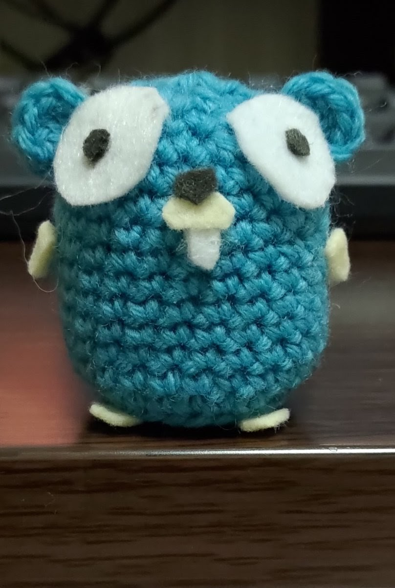
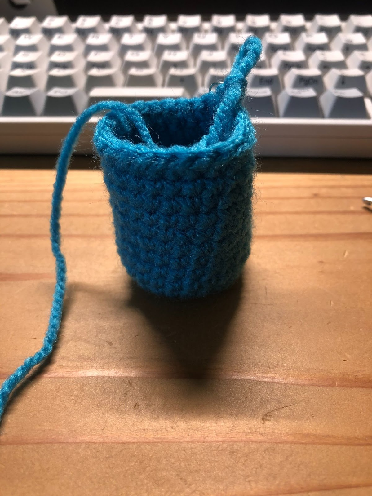
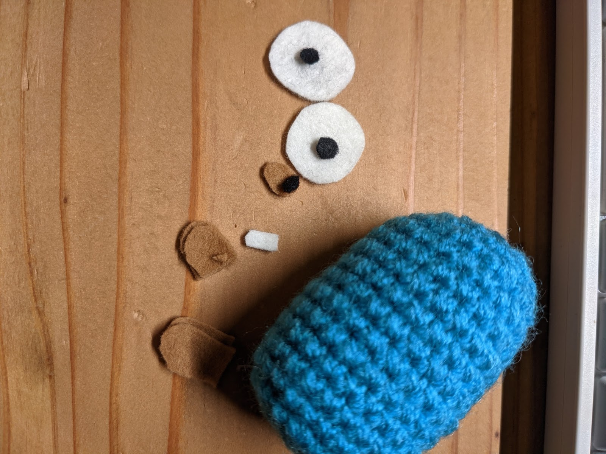
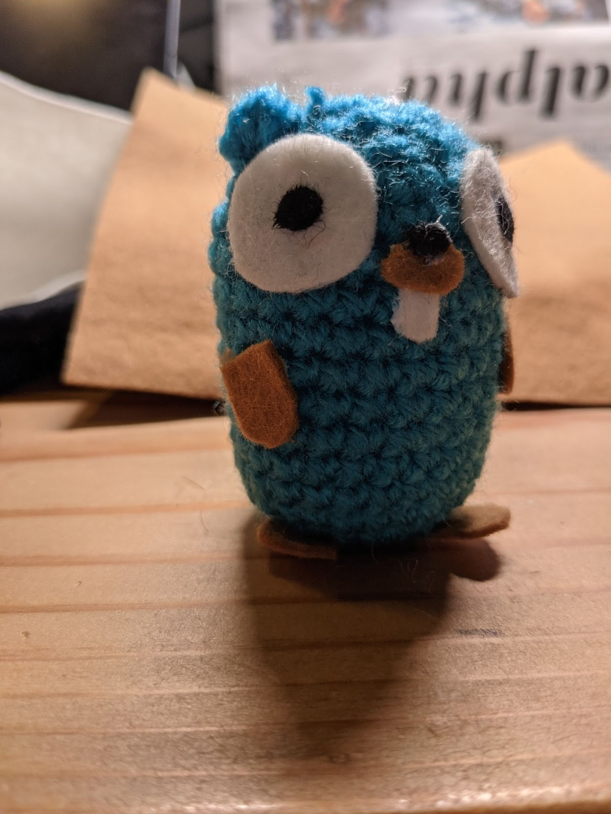

Gopherのあみぐるみを作ります。

Go言語のキャラクターGopherはRenée Frenchによってデザインされました。
このcodelabで説明しているGopherのあみぐるみの作り方はmikiとmihohoiに帰属します。
・毛糸（並太程度、色: ターコイズ）
・フェルト（色: 白、黒、ベージュ）
・わた（適量）
・かぎ針（5号、または指定の号数より1号下げたもの）
・段数マーカー
・ハサミ
・布用ボンド
・ピンセット
1. 輪の作り目をして8目で編み始める。最初の目に引き抜き編みをする。 [8目]
2. 立ち上がりの鎖目1目編む。(次の目に細編み2目で増し目をする) × 8回行う。 初めの細編みに引き抜き編みをする[16目]
3. 立ち上がりの鎖目1目編む。(次の目に細編み1目、細編み2目で増し目をする) × 8回行う。 初めの細編みに引き抜き編みをする [24目]
4. 4 -13 細編みで24目編む。 [24目]

14. (細編み2目, 細編み2目一度で減らし目をする) × 6回行う。初めの細編みに引き抜き編みをする。[18目]
15. (細編み1目, 細編み2目一度で減らし目をする) × 6回行う。初めの細編みに引き抜き編みをする。[12目]
13段目6目の位置から編み付けます。
立ち上がりの鎖目2目を編む。同じ目に中長編みを４目編む。鎖目を2目編む。
13段目18目の位置から編み付けます。
立ち上がりの鎖目2目を編む。同じ目に中長編みを４目編む。鎖目を2目編む。
フェルトをそれぞれのパーツ用に切り出します。
白いフェルト：白目を2つ切り出す。2つの白目（直径2cmの円）を切り取ります。その後、歯を切り取ります。
黒いフェルト：目と鼻の頭を切り取ります。
ベージュのフェルト：鼻、手、足、尾を切り取る。
それぞれのパーツを貼り付けます。

わたを詰めます。
16. (細編み2目一度で減らし目をする) × 6回行う [6目]
絞り止めをします。
